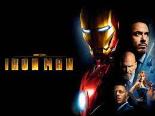
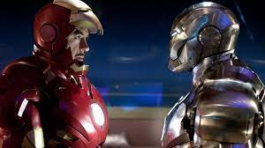
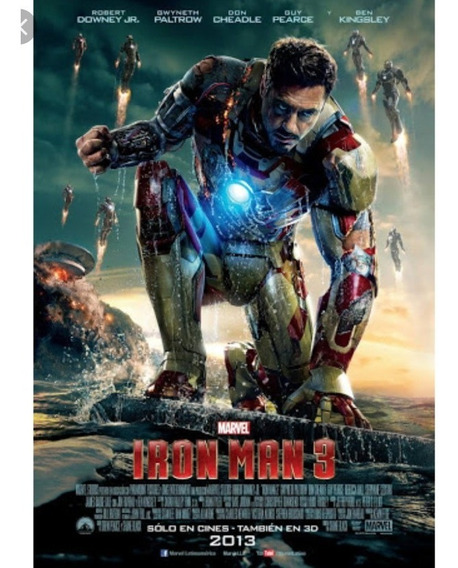

| Ironman 1,2,3 | ||
IronMan 1 |
IronMan 2 |
IronMan 3 |
|  |  |  |
| Un empresario millonario construye un traje blindado y lo usa para combatir el crimen y el terrorismo. |
Con el mundo ahora consciente de que él es Iron Man, el millonario inventor Tony Stark debe forjar nuevas alianzas y confrontar a un enemigo nuevo y poderoso. |
El descarado y brillante Tony Stark, tras ver destruido todo su universo personal, debe encontrar y enfrentarse a un enemigo cuyo poder no conoce límites. Este viaje pondrá a prueba su entereza una y otra vez, y le obligará a confiar en su ingenio. |